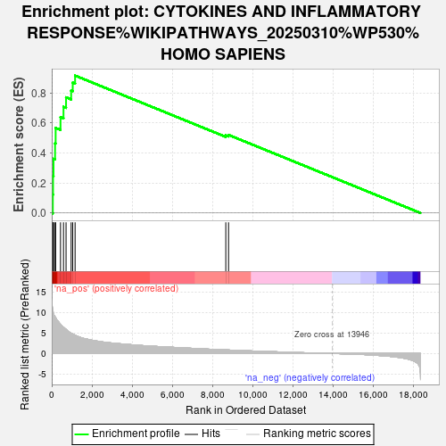
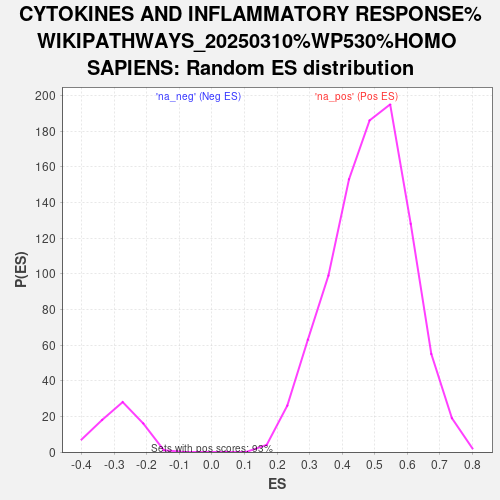

| | | Dataset | ranked_genes |
| Phenotype | NoPhenotypeAvailable |
| Upregulated in class | na_pos |
| GeneSet | CYTOKINES AND INFLAMMATORY RESPONSE%WIKIPATHWAYS_20250310%WP530%HOMO SAPIENS |
| Enrichment Score (ES) | 0.9163879 |
| Normalized Enrichment Score (NES) | 1.8810248 |
| Nominal p-value | 0.0 |
| FDR q-value | 0.0 |
| FWER p-Value | 0.0 |
Table: GSEA Results Summary

Fig 1: Enrichment plot: CYTOKINES AND INFLAMMATORY RESPONSE%WIKIPATHWAYS_20250310%WP530%HOMO SAPIENS
Profile of the Running ES Score & Positions of GeneSet Members on the Rank Ordered List
| SYMBOL | RANK IN GENE LIST | RANK METRIC SCORE | RUNNING ES | CORE ENRICHMENT | | 1 | TNF | 54 | 10.450 | 0.1223 | Yes |
| 2 | HLA-DRA | 65 | 10.298 | 0.2452 | Yes |
| 3 | IL1B | 89 | 9.802 | 0.3615 | Yes |
| 4 | IL7 | 165 | 8.953 | 0.4647 | Yes |
| 5 | CD4 | 194 | 8.702 | 0.5675 | Yes |
| 6 | CXCL1 | 436 | 7.077 | 0.6392 | Yes |
| 7 | CXCL2 | 585 | 6.401 | 0.7079 | Yes |
| 8 | CSF1 | 712 | 5.869 | 0.7713 | Yes |
| 9 | IL15 | 965 | 4.933 | 0.8167 | Yes |
| 10 | TGFB1 | 1044 | 4.728 | 0.8692 | Yes |
| 11 | HLA-DRB1 | 1161 | 4.468 | 0.9164 | Yes |
| 12 | IL11 | 8653 | 0.883 | 0.5180 | No |
| 13 | PDGFA | 8791 | 0.851 | 0.5207 | No |
Table: GSEA details [plain text format]

Fig 2: CYTOKINES AND INFLAMMATORY RESPONSE%WIKIPATHWAYS_20250310%WP530%HOMO SAPIENS: Random ES distribution
Gene set null distribution of ES for CYTOKINES AND INFLAMMATORY RESPONSE%WIKIPATHWAYS_20250310%WP530%HOMO SAPIENS